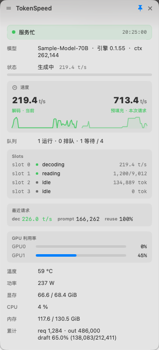

现在解码有多快？
TokenSpeed 把这个答案常驻在 macOS 菜单栏里：一个来自本机 Strata 服务的数字，外加一个看细节的浮窗 —— 而在"没有数字可显示"的那些时刻，它会如实告诉你。
文字三态，图标四态
数字是最有意思的一态，但另外两态决定你信不信它。把上一次测得的旧速度当成现在的速度显示出来， 比不显示更坏，所以 TokenSpeed 从不这么干。
| 状态 | 栏位显示 | 含义 |
|---|---|---|
| 取数失败 | ! | 服务连不上、没起，或 key 被拒。该去看了。 |
| 正在生成 | 219.0t/s | 当前解码吞吐，取 live.tok_s，缺就退回最近一条请求的值。
封顶 999.9，菜单栏不会被数字撑宽。 |
| 空闲 | idle | 没有请求在生成。服务端这时仍然上报上一次测得的速度 —— TokenSpeed 把它丢掉，不冒充现值。 |
浮窗里每个数字都标来源：当前、本次请求、最近请求。
解码吞吐、预填充速度、延迟三者永不合并成一个数 —— 没有来源的吞吐数字不是事实。
浮窗
点一下图标，就是你本来要 curl 才能拿到的那些东西：
- 模型、引擎版本、上下文上限
- 请求阶段进度条（reading 蓝、generating 绿，随轮询生长）
- 解码与预填充速度，各带一条 Strata 自己的历史 sparkline
- 队列占用，以及每个槽位当前那种字段形状的一行详情
- 最近一次请求：解码、prompt、缓存复用
- 每张 GPU 的利用率/温度/功耗/显存；CPU、内存、累计计数
要哪些栏位在设置里勾，界面有英语、简中、繁中三种。改完立即生效，不重启进程。

结构上就是只读的
客户端只发两种请求：GET /metrics 取全部显示内容，GET /health
做不要 key 的存活探测。它不调用任何会改服务端状态的端点 —— 没有 /load、没有
/unload、没有 /slots/0?action=… —— 也不轮询存请求体的监控端点。
观测工具不该有本事改动被观测的东西。
API key 在设置窗口里输入（只写不回显：没有任何代码路径能把已存的 key 读回界面），
或者放在 STRATA_API_KEY 环境变量里。它不进日志、不上菜单栏、不硬编进源码；
出现在错误提示里时一律先脱敏成前 4 位 + ****。
装起来
macOS 13 及以上，局域网内一台 Strata 服务，零第三方依赖 —— 只有 SwiftPM + AppKit + SwiftUI。
不想编译：最新 release
里挂着打好的 .dmg（只支持 Apple Silicon），打开后把图标拖进「应用程序」。
它是 ad-hoc 签名、没有公证，首次启动要右键 → 打开。
swift build -c release # 或 swift test，或 zsh tools/make_app.sh
zsh tools/make_app.sh # 产出 TokenSpeed.app：LSUIElement、图标、版本号、ad-hoc 签名要登录即起、进程被杀自动重拉，就用 LaunchAgent；key 从环境变量进 plist，不进仓库：
export STRATA_API_KEY=<服务端 key>
zsh tools/install_launch_agent.sh在 Apple Silicon 笔记本上实测的开销：空闲 + 浮窗关约 0.15 % CPU， 生成中 + 浮窗开均值 2.4 %。菜单栏脉冲环是 Core Animation 的 layer，浮窗每一块子树都 挂在内容指纹后面。